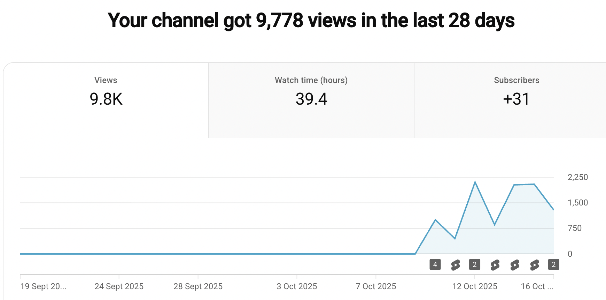

Johno’s Lab - First Week of A New YouTube Channel
I’m taking a little time off, to get energized before our next course and because I was generally feeling a little tired out. It’s really important for me to have time to let my brain spin freely! I’ve done some good reading and resting and so on, but I do like to have a few bits of routine + structure even in a gap, and one experiment I thought I’d try this time is attempting to regularly post some short videos on old projects. Let me explain:
- I’m enjoying the low threshold of posting stuff here on my blog! But a lot of the bits and bobs I’ve been doing for fun (e.g. crystal timelapses) are well-suited to video.
- I’ve been dreaming for ages of making long, high-quality videos on some of these ideas, but that’s a ton of time investment!
- The hope is that a short video is enough to give ‘closure’ to some of the projects I’ve been stringing out, or to share unstructured updates, while still leaving open the possibility of a more casual, long-form video if there’s more I want to cram in.
As far as the format goes, I’m enjoying this so far! As a representative sample, I’ve “closed out” my duckweed experiments, with a catchy short showing the motion I wanted to talk about, and a longer background video chatting about the backstory, why I was growing it, and how I think the motion arises (including a simulation of the phenomenon). I no longer have tubs of duckweed taking up one surface in my basement just waiting for me to finally get around to filming something. And I finally have a place to share the timelapse I took, the fun discovery of the motion, and the cool AI-for-science mini experiment that started it all off.

The shorts medium is one I’m very unfamiliar with, and so that aspect has been interesting too. It seems like when I post a video, it gets a spike of views in the first ~hour and then dies off, with only a few continuing to get a trickle of views after that initial burst. Still, 10k views is a lot! I hadn’t thought through how many shorts people watch. The longer background videos are getting tens of views, more in line with what I expected for a new channel not marketing or anything.

One hope in posting these was that I’d inspire a bit of curiosity in people - maybe they’d take an experiment further than I did, or see the short and come explore the longer videos for more. Alas, I suspect that most shorts viewers are much closer to mindlessly scrolling, and I’m a little worried I’m just feeding that beast.
Indeed, setting up a fresh YT account (and a tiktok account, since I posted a few vids there too to test it out - with a few k views as a result) gave me a somewhat shocking view of what a shorts feed looks like. Selecting “STEM” in tiktok steered it towards some at least midly informative content, and my personal YT (tuned by decades of watching science+tech nerdery) was a little better, but it’s clear all of these things are optimizing for catchy + addictive first.
I’m still undecided if this is enough to put me off the medium completely - but I might shift purposefully away from anything too algo-friendly and stick to minimal editing of whatever I find interesting - moving lab notes rather than carefully scripted short videos. Also, a friend said I was ‘building a funnel’ and that made me stop for now, yuk.
Anyway, this excuse to go over a few old projects and start on a few new ones has reminded me of many good things. The ease with which we can whip up 3D printed bits, cobble together cheap hobby parts, and have AI help code up something neat is delightful! (a misc subset of recent prints below)

I also enjoyed taking a break from working, and leaning on AI a little more for the small bits of coding I did do - mostly simulation stuff that I could very easily + carefully describe, while letting the AI handle the boring scaffolding. As an example, I’m very plese with the shader inspired by the rheoscopic fluid stuff, and the bad apple side-quest reddit post I posted on reddit makes me happy - I’ve contributed to a long and silly tradition of people rendering that clip in weird ways, I’ve made something pleasing to look at + play with, and I could have creative charge without having to fix silly webgl errors.
Now that I’ve cleared a bit of my backlog, I’m going to dial back on the daily posting and switch to using this as I intended, as a more when-needed type place to dump clips. Subscribe if you’re interested :) And stay tuned for more posts here too - this isn’t going anywhere any time soon. :peace:
PS: I should link the channel! https://www.youtube.com/@JohnosLab